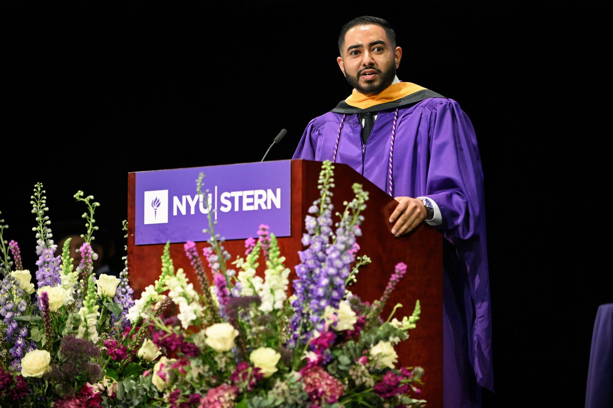
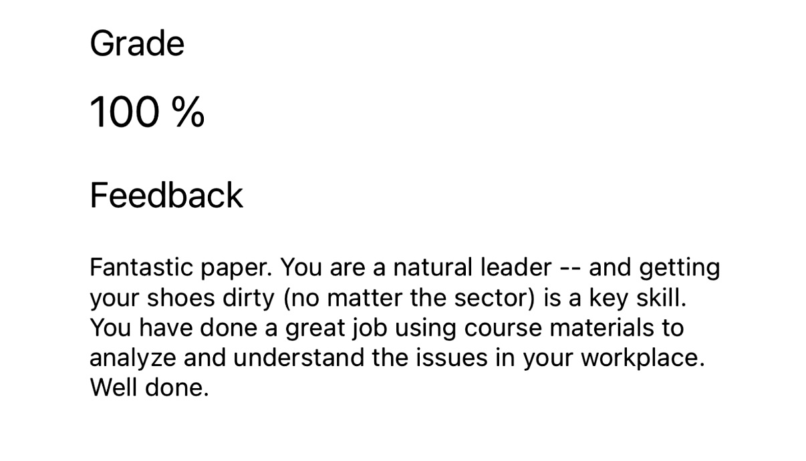
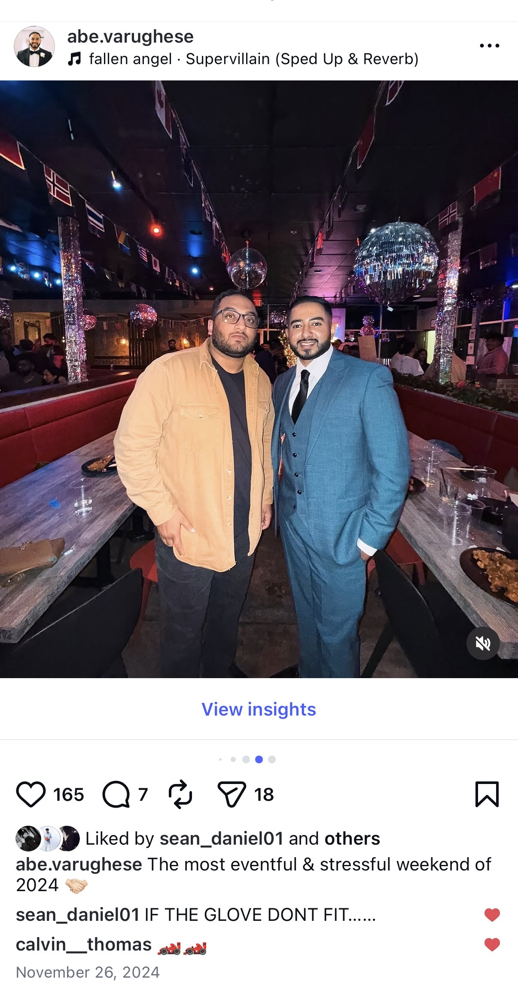
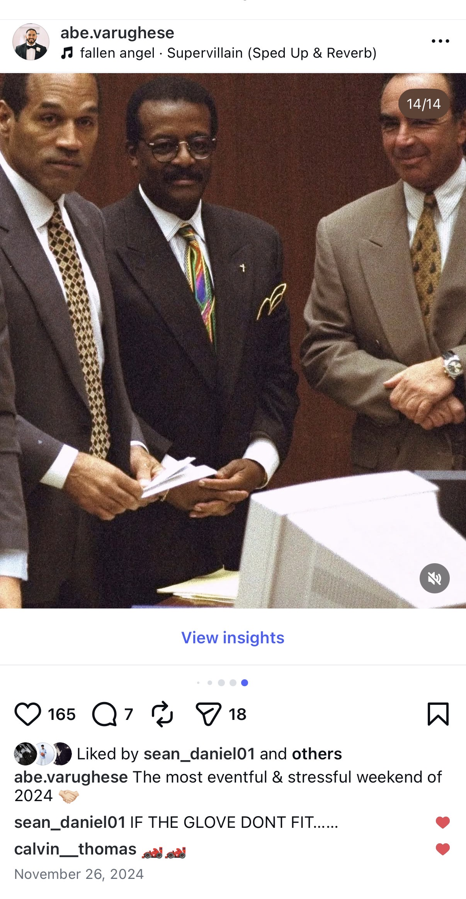
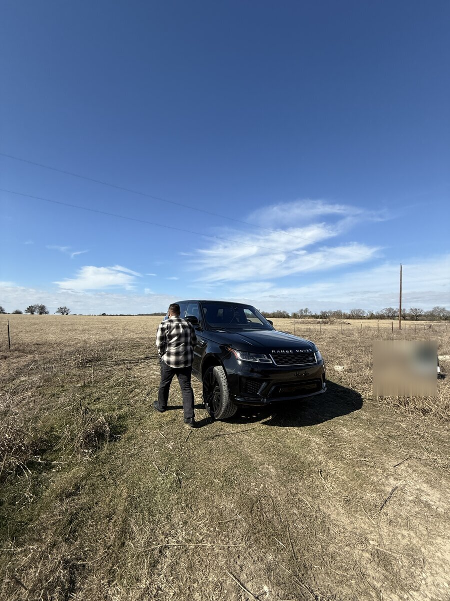
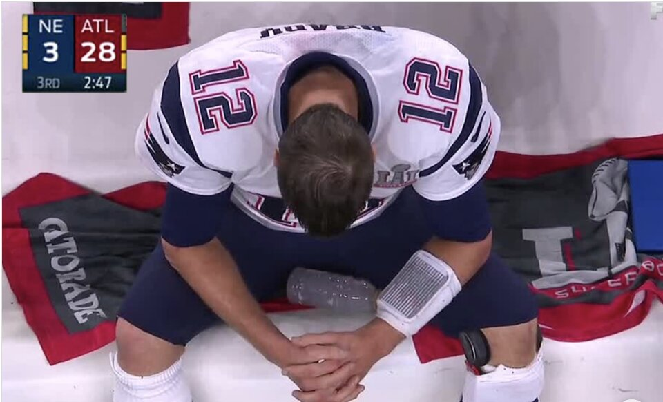

Law School at 31.
Today is my first day of law school. I'm 31 years old. I know that raises questions. I know it doesn't make sense to a lot of people. So instead of repeating myself a hundred times, I'm writing it all down.
I'm typically a very private person. You might think you know something about my life. But you only know what I want you to know. This letter is me being open on purpose.
I'm also writing this in the hope that it might help someone else. If you're sitting with a dream you're too scared to say out loud, maybe my story is the nudge you need.
I was never the smartest kid in the room.
Growing up, people always told me I should be a lawyer. You're a good talker, they'd say. I never took it seriously because I genuinely thought I wasn't smart enough. That wasn't something I could do.
In my 20s, I got the opportunity of a lifetime. I got to see firsthand how a multibillion dollar company runs behind the scenes. The things I saw and learned can't be taught in a classroom. If you compared me from when I started to when I left, I was a completely different person. It was a bootcamp in how to build and run a company at scale.
During that time, I worked alongside some of the most impressive C-Suite executives I've ever met. They pushed me. They challenged me. They made me realize that maybe I wasn't as incapable as I had told myself. They seemed to think I was performing at a very high level, and for the first time in my life, I started to think maybe I should set my sights higher.
NYU Stern
I decided to pursue my masters. I only applied to one program. NYU Stern.
To be honest, I didn't think I'd get in. I put my odds at maybe 18%. But I had a quote from one of our executives, Maureen Early, running on repeat in my head.
Don't say no for other people. Let them say no to you. Maureen Early
What she meant was simple. We talk ourselves out of the big things before anyone else gets the chance to. We assume the answer is no. We don't even bother asking. But what do you actually have to lose? Go. If they say no, they say no.
So I applied. And for some reason, they said yes.
I walked into NYU Stern expecting to be the dumbest person in the room. Turned out I wasn't. I did well. I made friends I'm still close with today, people I can call at any hour for anything.
The Professor
While I was there, I met a professor who changed the way I thought about everything. I'll leave her unnamed. I think she'd prefer to keep a low profile. But if you dig through my LinkedIn or watch my commencement speech, you'll find her.

She's a Harvard graduate. She worked as a Manhattan prosecutor, got bored, and went corporate. She's held senior roles at multiple Fortune 500 companies. She sits on several boards. Most recently, she served as Chief Legal Officer of Etsy.
Out of every class I took at NYU Stern, hers was the one I enjoyed the most. She shared stories from her career and how she navigated real situations. We talked about the law constantly. She would break us into groups for what she called mini law school. I realized I loved it. And I was good at it. Every paper, every in-class assignment, I came to play. I don't say that to brag. I'm the first to admit I'm not the sharpest tool in the toolbox. But we all have strengths, and you have to learn to play to yours.

Feedback like this started to chip away at the story I had been telling myself. Maybe I was meant for more. Maybe these accomplished executives saw something I didn't.
In our conversations, she was one of several people who pushed me toward law school. She thought I was a natural. She thought I would do really well. She said I was made to be a lawyer. To hear that from someone who had accomplished what she had accomplished meant more to me than I can explain.
But I still didn't act on it.
The Meeting That Changed Everything
That same week, I had a meeting with our Chief Human Resources Officer about a security incident at work. I knew her well. The meeting was scheduled for 30 minutes. When I arrived, we took care of the matter in about two minutes. Her team had already handled it behind the scenes.
I was about to leave when she asked how school was going. We ended up talking for the remaining 28 minutes.
She shared the highs and lows of a long career that took her from investment banking to healthcare. Then she told me something that stopped me cold. During her MBA, she spent time working in the law department at her university. The professors there became close friends and pushed her to go to law school. She didn't. Three decades later, they still tell her it's not too late to do it part time. She said it is one of the great regrets of her life.
I told her what my professor had said to me that same week.
She went full court press. Like Kawhi Leonard in the playoffs. She practically demanded that I apply. What did I have to lose? Before I left her office she gave me a homework assignment. Find the dean of the law school at her university. Ask for a meeting. I sent the email that weekend. I never got a response.
But it didn't matter. Sending that email turned a thought into a real possibility.
I don't believe in coincidences. What are the odds that in the same week, two completely different people from two completely different parts of my life tell me the same thing? Two separate conversations. Same voice underneath.
The prayer.
I sat with it for weeks.
Lord, I have absolutely no clue what to do. I need your help. I need your guidance. I can't do this without you. Open the doors that need to be opened. Close the doors that need to be closed. Help me figure out what my next steps should be.
Over the next few weeks, He started putting ideas in my heart. Different paths. Different possibilities. When I pictured myself as an attorney, I didn't see one version of the career. I saw ten. There were so many things I could be involved with, so many deals I could run. I just needed the license.
I spoke to people who had already done it. Karen Alexander and several others. Every single one of them encouraged me. They all said the same thing, almost word for word. It's hard, but it's not impossible. If they could do it, I could do it. And I was absolutely not too old. There were people much older than me sitting right next to them in class.
Society had opinions.
Think about the timeline. Prepare for a year just to get in. Wait another year to start. Three years of law school while possibly not working full time. Then pass the bar. I am doing all of this at an age where most of my peers are settling down and starting families.
I understand why people think it's crazy. I just don't care.
As I started pursuing this path, I cannot tell you how many people did not understand. Why now? What's the point? Do you really need to do this? How will you survive? Shouldn't you just settle down and start a family?
Here are some real conversations I had.
If you sent me those texts and you're reading this now, I love you. They're not wrong. They raise real concerns. They genuinely care. And I appreciate every single one of them for it.
But when it came time to decide, I went to the people who had already walked this path. I told them every thought, every fear, every worry. Every single one of them said the same thing. Go. You would be great at it.
My why.
This was one of the hardest decisions of my life. But once I fully analyzed it and prayed on it, it became a no brainer. I saw the play so clearly. It was as if God took a whiteboard and drew it out for me.
Life is short
Tomorrow is not guaranteed. When I was 21, I was in a motorcycle accident where I should have died. It is by the grace of God that I'm still standing. With that, I refuse to end up on my deathbed full of what ifs. What if I'd had the courage. What if I'd taken the risk. What if I'd stepped out in faith. What would my life have been?
Honestly, this alone was the biggest factor in my decision.
Stress test your dreams
If you don't feel uncomfortable saying your dream out loud, it's not big enough. If 99% of people think you're crazy, good. The goal was never to be part of the 99%. The goal is to be part of the 1%.
You have to enjoy the work
When I was 18, I started my first company as a government contractor while going to undergrad full time at CUNY Baruch for Finance. Did I make good money? Absolutely. Did I hate every second of it? Also absolutely.
Money matters. But it isn't everything. You have to enjoy what you do. You have to be excited to wake up in the morning. When I compared building a CPA firm to practicing law, the answer was obvious. Why would you do something you hate for the rest of your life?
Watch the tides
Constantly analyze the markets. Watch the tides. Move with the currents.
While I was at NYU, AI was just starting to come out. For reference, ChatGPT 4 and Claude 3.5 were the models available. There weren't even project folders yet. I'm pretty sure I was one of the only people at Stern using Claude at the time, and that was because there was a flyer at the NYU entrance that gave it to me for $1 for 90 days.
Even with those limited models, the paradigm shift was bright as day. We took classes that taught us the basics of Python and coding. We pushed AI to the next level. It became obvious that entire chunks of the accounting profession were about to be automated. Fewer CPAs would be needed.
It also became clear that life as an attorney was about to change. To be the best attorney in the room, you don't need the highest IQ. You need to be the best at using AI. You might be smarter than me. But there is no way you are smarter than my six agents working 24 hours a day.
Let me pause here because I know what some of you are thinking. So is AI just going to do all your work in law school and as a lawyer? What are you actually going to learn then?
If that's the thought in your head, you don't understand how AI actually works. Schools are not stupid. They know students are using AI. To combat it, they're going old school. At NYU, we took exams in person with paper and pen. No computers. If you want to test a student's knowledge, that's really the only way these days.
My monthly bill for Anthropic alone is $200. I pay for VPS servers, other LLM providers, and half a dozen API keys on top of that. My total AI bill averages around $400 a month.
I don't use ChatGPT or the Claude chat app the way most people do. I am building my own systems. Memory files, markdown files, RAG databases, custom agents. I am essentially building another version of me. The sharpest and brightest version. I teach the AI how to sound like me, what I do, how I would handle different situations, what I want, what I don't want. I don't listen to AI. AI listens to me.
The custom files you build and refine over time are where the secret sauce is. Another attorney I know told me he would never sell his memory, skills, and system files. But if he had to put a number on it, he wouldn't sell for anything less than a few million dollars.
Now imagine building and curating that system during law school. Speaking with professors. Getting their advice on what works in practice and what doesn't. Which cases and arguments are the strongest. Which to avoid. Every little thing they say, I can pull into my system and refine it over time. I am likely one of the first law students in America building this at the scale and depth I'm about to.
From the time I graduated NYU to starting law school, I cofounded a company, cofounded a nonprofit, sat on the board of a real estate development committee, and was involved in multiple investment deals across real estate and venture capital. Every single one of them, I integrated AI in every way I could. I tried everything. I became an expert to the point where I'm giving presentations on AI on behalf of multibillion dollar companies.
Kevin.
Now buckle your seatbelts. This is where it gets fun.
One of my best friends from 9th grade is Kevin Alexander. Kevin is a natural born salesman and a smooth talker. He could sell ice to an Eskimo. He could sell you the Brooklyn Bridge. He's also a shrewd negotiator. In the real estate deals we did together, I can't tell you how many times Kevin lowballed the sellers. It got so bad it was disrespectful. We nicknamed him Lowball Kevin.
Kevin is also a master of persuasion. Even though we all know the earth is round, he could present an argument that got you thinking. Wait. Is it actually round? Maybe it is flat. And when that didn't work, he'd just annoy you to death until you gave in.
We've known each other for almost two decades. We know what the other person is thinking at all times. We can be in a meeting and just look at each other and know exactly what to do. We're like synchronized swimmers. Together, we're Dwyane Wade and LeBron James.
So it hit me. If I were on death row, or looking at life in prison, there is nobody else on earth I would want defending me besides Kevin Alexander.
What if I could convince him to join me?
While I was at NYU, I flew to Texas for Kevin's sister's wedding. The day after the wedding, she had a small get together at a restaurant. I brought up the idea. Kevin started laughing. He didn't think he was smart enough either.
I told him everything. Everything I had experienced. Everything I had gone through. I assured him he could do it. I told him that if he were sitting in my classes at Stern right now, he could hold his own against any of these kids. I'm not going to lie. I went full sales mode. It was some of my finest work.
We spent the next few hours at that restaurant mapping out the next decade of our lives. That night, we named what we were building. We called it The Playbook. One day, maybe ten or fifteen years from now, we'll turn it into an actual book.
On my flight back to New York, we texted for hours about how this would work and how we'd structure it. Seventy two hours after the first conversation, Kevin was in.

Imagine deciding to go to law school at the same time as your best friend from 9th grade. Imagine walking into work every day with the person you've been running plays with since you were a kid. Imagine depositions and courtrooms with someone who can read your mind.
Kevin and I growing up were always the troublemakers. We never liked to follow the rules. We always did our own thing. Every single time we got into something, we managed to wiggle our way out. Now imagine us doing that with a law license.
We're a few chapters into The Playbook already. Here's to another.

The cost.
Everything in life is risk management. Risk to reward.
Some people will read this and say I'm arrogant, overconfident, delusional. The good news is, I don't care.
I truly believe that when it's all said and done, Kevin and I get to $100 million. Not through law alone. It requires using a law license alongside the investment companies we already run. If I had to explain how, it's actually quite simple. That's all I'm willing to disclose right now. I always say, don't tell me what you're going to do. Show me.

For anyone who says it can't be done, maybe that's true for you. That's a small glimpse of what Kevin and I have already done. Bought dozens of acres of land for development. Flipped properties. Made dozens of successful pre-seed to Series A investments alongside firms like Founders Fund and Nvidia. Started a nonprofit that flies to Africa to help people truly in need. We did all of that in a few years. We did it because we were bored.
Now the other side of the coin.
Most people my age are settling down and starting families. I'm doing the opposite. I'm a private person and I don't share much of my personal life, but I would be lying if I said this decision didn't affect it. There are things that could have been different if I had chosen another path. What happens in the future?
I don't need to know. I'm walking in faith, not sight, and I trust God with whatever He has planned.
I pray the same prayer constantly. God, I need your guidance. I don't know what to do. I need you to steer. Open the doors that need to be opened. Close the doors that need to be closed. If it's meant to be, it will work out.
That's how I try to live. I walk in faith. I trust the process. I control what I can control, and I leave the rest to Him.
At the end of the day, I know without a shadow of a doubt that God placed this in my heart. I have a rough plan, but I follow where He leads. If He tells me to change course, I change course. I have the faith and the belief that He knows better than I do. Even when we can't see it.
To whoever needs to hear this.
I'm writing this last part for whoever needs it right now. Wherever you are. Whatever dream you've been sitting with. Whatever thing you've been too scared to say out loud.
Go.
I don't care how old you are. I don't care what people told you. I don't care what you told yourself. Go pursue it. Think higher for yourself than you ever have before. Think so big it makes you uncomfortable. Think so big that when you say it out loud, people look at you like you've lost your mind.
Good. That's exactly where you want to be.
The world is full of people who will tell you to be realistic. To play it safe. To take the sure thing. They mean well. But most of them are speaking from their own fear, not from experience. Most of them never tried. Most of them said no for other people before anyone had the chance to say no to them.
Don't be that person.
People called me delusional for going to NYU Stern. I went. People said I was crazy for starting companies in my 20s. I did it anyway. People said I was crazy for wiring money to buy properties I'd never seen, in other states. I closed on them. People said I was crazy for flying to Africa to help strangers. I went. People said I was crazy for having AI agents running 24 hours a day. They're still running. People told me I was too old for law school. Here I am.
Delusion is just vision that hasn't been proven yet. Every person who ever built anything great was called crazy first. Every single one. The difference between a delusional person and a visionary is that the visionary doesn't quit.

Greatness and madness are next door neighbors, and they often borrow each other's sugar. Joe Rogan
There's a cost to not going. You won't feel it right away. You'll feel it at 45, in a comfortable job, on a Tuesday afternoon, when a song comes on and reminds you of who you used to want to be. That whisper never goes away. It just gets louder the longer you ignore it.
That's the real risk. Not failing. Not looking stupid. The real risk is waking up one day and realizing the dream got old before you did.
Here's the part I haven't said yet. I'm scared. I've been scared this whole time. The voice in my head that says "who the hell do you think you are" has been loud. Louder than most people would guess. I just decided not to let it drive.
Bravery isn't the absence of fear. It's the decision to move anyway.
So manifest it. Say it out loud. Write it down. Put a number on it. Tell God what's in your heart and then have the faith to walk toward it even when you can't see the whole staircase. You don't need to see the whole staircase. You just need to take the next step.
Faith isn't certainty. It's permission. Permission to walk toward something you can't see yet. Permission to look stupid in front of strangers. Permission to fail publicly and keep going. Faith is what lets you lift your foot off the ground when there's no visible floor to land on.
Don't let the pressure of society write your story. Don't let the people who settled tell you to settle. Don't let anyone who hasn't done it tell you it can't be done. Find the people who have been where you want to go, listen to them, and then outwork everyone.
The timeline doesn't matter. The age doesn't matter. The doubters don't matter. The only thing that matters is what God put in your heart and whether you have the courage to chase it.
Everything I've built started with one small action. NYU Stern started with one application. Law school started with one email to a dean who never wrote back. Kevin was one conversation at a restaurant in Texas. You don't need to map the next ten years. You need to do the next one thing. Send the message. Book the flight. File the LLC. Start the Google Doc. Just one.
Remember what Maureen said at the top of this letter. Don't say no for other people. Let them say no to you. That's the whole game. Every dream you have is someone waiting to say yes. But first you have to ask. Stop pre-rejecting your own life.
It's only delusional if it doesn't work. Now it's time to go execute.